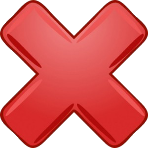
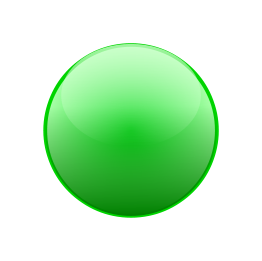

Questão 1 - Em que ano o Brasil foi bicampeão mundial?

A) 1950
B) 1962
C) 1958
D) 1970
Questão 2 - O país sede e o campeão da Copa de 2006 foram, respectivamente:
A) África do Sul e Espanha
B) França e Brasil
C) Estados Unidos e Alemanha
D) Alemanha e Itália
Questão 3 - O maior artilheiro das Copas é:
A) Ronaldo Fenômeno
B) Diego Maradona
C) Miroslav Klose
D) Lionel Messi
Questão 4 - Quem é o jogador que venceu mais vezes a Copa do Mundo?
A) Pelé
B) Yohan Cruyff
C) Cafu
D) Zinedine Zidane
Questão 5 - Qual seleção foi derrotada na final pelo Brasil em seu primeiro título mundial?
A) Itália
B) Suécia
C) Argentina
D) México
Questão 6 - Qual foi a única edição de mundial em que a seleção de Trinidad e Tobago participou?
A) 2010
B) 1994
C) 1970
D) 2006
Questão 7 - O artilheiro da Copa de 2014 foi:
A) Thomas Muller
B) James Rodríguez
C) Neymar
D) Cristiano Ronaldo
Questão 8 - As Copas de 1942 e 1946 foram canceladas devido:
A) A terremotos, tornados e tsunamis que atingiam grande parte da Europa e Ásia
B) A Segunda Guerra Mundial
C) A crises financeiras na FIFA
D) A grande crise global gerada pela quebra da bolsa de NY
Questão 9 - O primeiro páis a sediar uma Copa do Mundo foi:
A) Uruguai
B) Brasil
C) Alemanha
D) Espanha
Questão 10 - Quando e onde foi conquistado o único título mundial da Inglaterra?
A) Em 1978, na Argentina
B) Em 1966, na Inglaterra
C) Em 1998, na França
D) Em 1986, no México